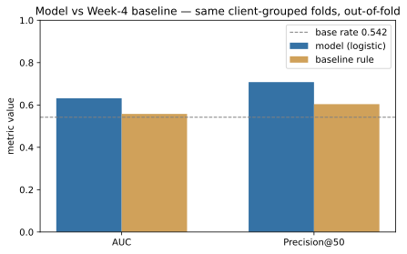
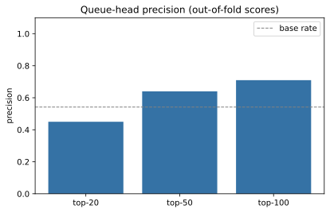
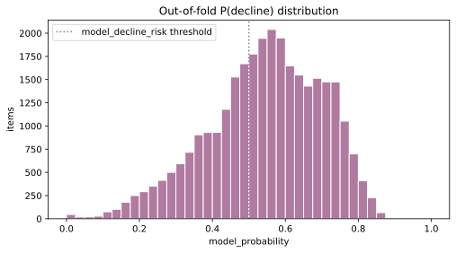
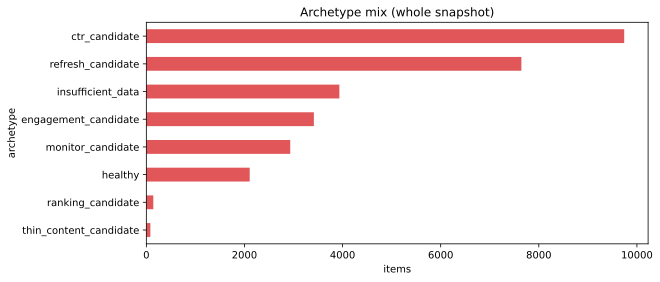

From Search Signals to Content Actions
Which existing page deserves the next review hour? A client-grouped, out-of-fold ranking of 30,000 pseudonymous content items turns search and engagement signals into a ranked, reason-coded action queue for a human editor.
Research pipeline
What this research does
Question. FlyRank works with large-scale search and content performance data, and in the content-refresh lane the practical decision is prioritization: which existing pages deserve a human reviewer's attention first?
Approach. Using the anonymized starter release — 30,000 pseudonymous content items, 32 clients, trailing-90-day window metrics plus a 30-day trend — a logistic model (24 features) estimates each page's probability of being in the observed decline.
Validation. Client-grouped out-of-fold GroupKFold(k=5); preprocessing is refit per fold; each row is scored only by the fold that held its client out; a transparent three-rule Week-4 baseline is scored on the identical folds.
Result. The model reaches out-of-fold AUC 0.632 (sd 0.037) vs. the baseline's 0.558 (sd 0.096), and precision@50 0.708 (sd 0.148) against a 0.542 base rate — both measured on the same five folds.
Use. A ranked queue with a reason code and archetype per row becomes a human-reviewed action playbook (refresh, expand, recheck position, monitor, human review). It is decision support, not automation, and not a causal claim that editing a page improves its future performance.
Which pages deserve the next review hour?
FlyRank works with large-scale search and content performance data. Its content team has one recurring decision: among thousands of existing pages, which few should get this week's editorial hour? That is a prioritization problem — the cost of a wrong pick is an hour spent on a page that is not the best next candidate.
A human cannot re-derive an ordering over 30,000 pages by hand — but they can honestly verify the first 20–100 rows of a good ranking. This system exists to make that ordering cheap to audit and trust.
What this model is
A ranked, evidence-backed queue — the model scores, the playbook maps each score to a concrete, human-reviewed content action. It does nothing more: no auto-edit, auto-publish, delete, redirect, or rank manipulation.
A public-safe, anonymized snapshot
Everything below comes from the in-repo starter release. No client names, domains, URLs, queries, tokens, or raw identifiers appear anywhere in this document.
Features (24)
22 numeric window/performance metrics (visibility, clicks, sessions, engagement,
freshness, position, CTR, rates) + 2 categorical (content_type,
main_intent). No identifier column is ever a feature.
Label (proxy)
decline_label = (trend_direction == 'down') from the 30-day trend.
A proxy for "worth a human's refresh review", not ground truth or a causal claim.
Excluded on purpose
content_id (row id), client_id (grouping only),
trend_direction / trend_pct (label sources) — asserted in code.
How the ranking is built and validated
A single pipeline relative to the label, all checked for leakage before any number is reported.
decline = (trend_direction == 'down') — the observed 30-day trend at snapshot time. 16,262 of 30,000 rows (0.542) are declining.content_type + main_intent. Broken down in the data section; asserted disjoint from IDs and label sources.stale (≥180d since update) + visible (impressions≥500) + ranking (avg_position≥10) → integer 0–3, ranked top-down. Raw and checkable.Pipeline: median / most-frequent imputer → scaler / one-hot → logistic (max_iter=1000, random_state=42). A transparent, calibratable ranker.GroupKFold(k=5): each client in exactly one test fold; preprocessing refit per fold; every row scored only by the fold that held its client out. Baseline scored on the same folds.client_id only as groups · ③ a leak-probe (label as a feature) hits near-perfect AUC under this harness — the model's 0.63 is nowhere near, so leaks would have surfaced · ④ no future or overlapping windows.Why this workflow is useful
The deliverable is an ordering, so the honest test is: does the top of the queue contain more declining pages than the base rate or the simple rule? Everything else — grouped splits, refit-per-fold, leak probes — exists to make that claim believable.
The honest check
Baseline and model are compared on identical folds with the same base rate reading. Apples to apples — that is the only fair comparison.
Model vs. baseline — same folds, out-of-fold
Mean ± std across the five client-grouped test folds. Base rate shown for
every precision number. All metrics are recomputed in capstone.ipynb from the raw
CSV — nothing is hard-coded on this page.

Caption: on identical client-grouped, out-of-fold folds, the model beats the transparent rule on AUC (0.632 → 0.558) and precision@50 (0.708 → 0.604). Both sit above the base rate — ordering by the model concentrates "declining" items at the top of the queue.

The operational view on all 30,000 rows (out-of-fold scores): precision@50 ≈ 0.64 and @100 ≈ 0.71 against a 0.542 base rate. The editor at the top of the queue sees a denser set of declining pages than random.

Out-of-fold probabilities spread across the range; thresholds at ≈0.50 and ≈0.65 are proposed priority cuts, not validated optima.

Which playbook action each queue row falls into (computed in
w07_action_playbook.ipynb): most rows resolve to a visible, cheap reviewable
action — CTR, refresh, engagement, monitor — and "insufficient data" routes to a human check
rather than acting on missing numbers.
| Metric | Model (logistic) | Baseline rule | Base rate |
|---|---|---|---|
| ROC–AUC | 0.632 ± 0.037 | 0.558 ± 0.096 | 0.542 |
| Precision@20 | 0.680 ± 0.214 | 0.640 ± 0.263 | 0.542 |
| Precision@50 | 0.708 ± 0.148 | 0.604 ± 0.224 | 0.542 |
| Precision@100 | 0.726 ± 0.115 | 0.626 ± 0.161 | 0.542 |
Queue-head precision on the whole out-of-fold-ranked queue: @20 ≈ 0.45, @50 ≈ 0.64, @100 ≈ 0.71 (base 0.542). The fold-to-fold spread (P@50 std ≈ 0.15) is a reminder — directional aid, not a per-page promise.
Ranked recommendations — always human-reviewed
Every queue row maps to exactly one archetype → one action, with a machine-readable reason code. Priority bands are proposed cuts of the model score (high ≥ 0.65, medium ≥ 0.50, low < 0.50) — heuristics, not validated optima.
page_one_decay_risk / low_ctr_visible_page.thin_visible_page.declining_with_demand.low_engagement_visible_page.page_one_decay_risk.Order of review (cost/value heuristic — clearly proposed, not measured)
Rows are ranked by model score first; inside a priority band we suggest the cheapest visible high-confidence fix first: CTR → thin → refresh → engagement → recheck position. There is no effort or cost datum in the repo, so this ordering is qualitative, not a measured result.
Human review is mandatory. The editor opens the queue at rank 1, reads the reason code, checks ① search intent ② content quality ③ SERP context ④ the single-number trend ⑤ business relevance ⑥ any "no-data" marker — and may always reject a row. No auto-refresh, no auto-publish at any point.
What this system must never do on its own
- Publish content autonomously
- Delete or redirect pages
- Change canonical URLs or titles/meta without human review
- Treat missing data as a confirmed problem
- Prioritize solely from one score with no context
- Be read as proof of Google ranking causality
What this work does not claim
One time cut with trailing windows. No seasonality, no outcome-feedback loop; numbers may not hold next month or for a different client mix.
There is no refresh-event column and no before/after design in this repo. "Declining" is an association; refreshing a page is never claimed here to cause recovery.
The trend label is a snapshot heuristic for "worth reviewing", not ground truth.
search_volume/competition
/cpc are missing on ~8% of rows, word-count on ~26%; the imputer fills the
model, and "no data" rows carry explicit markers rather than pretending to decisions.
P@50 std ≈ 0.15 — one client's fold can look markedly better or worse. This is an ordering aid, not a per-page promise.
The 3-level priority bands are proposed cuts of the model score, not validated optima; the refresh rule is a conservative decision-support guideline, not a guarantee.
Honest vocabulary
Every claim uses measured, observed, directional, decision-support, proposed, requires human review. No proves, no guarantees, no will increase traffic, no causal refresh, no production serving claim.
Run it yourself, top to bottom
Capstone notebook
work/notebooks/capstone.ipynb recomputes every
number on this page from the raw anonymized CSV, out-of-fold, with zero cached figures.
python -m nbconvert --execute --inplace work/notebooks/capstone.ipynb
Tracked notebooks (in order)
w01_research_question→w02_ml_task_framingw03_data_contract+ leakage probew04_baseline_score(the Week-4 rule)w05_model→w06_validation_auditw07_action_playbook(archetype → action mapping)capstone.ipynb— recomputes everything on this page